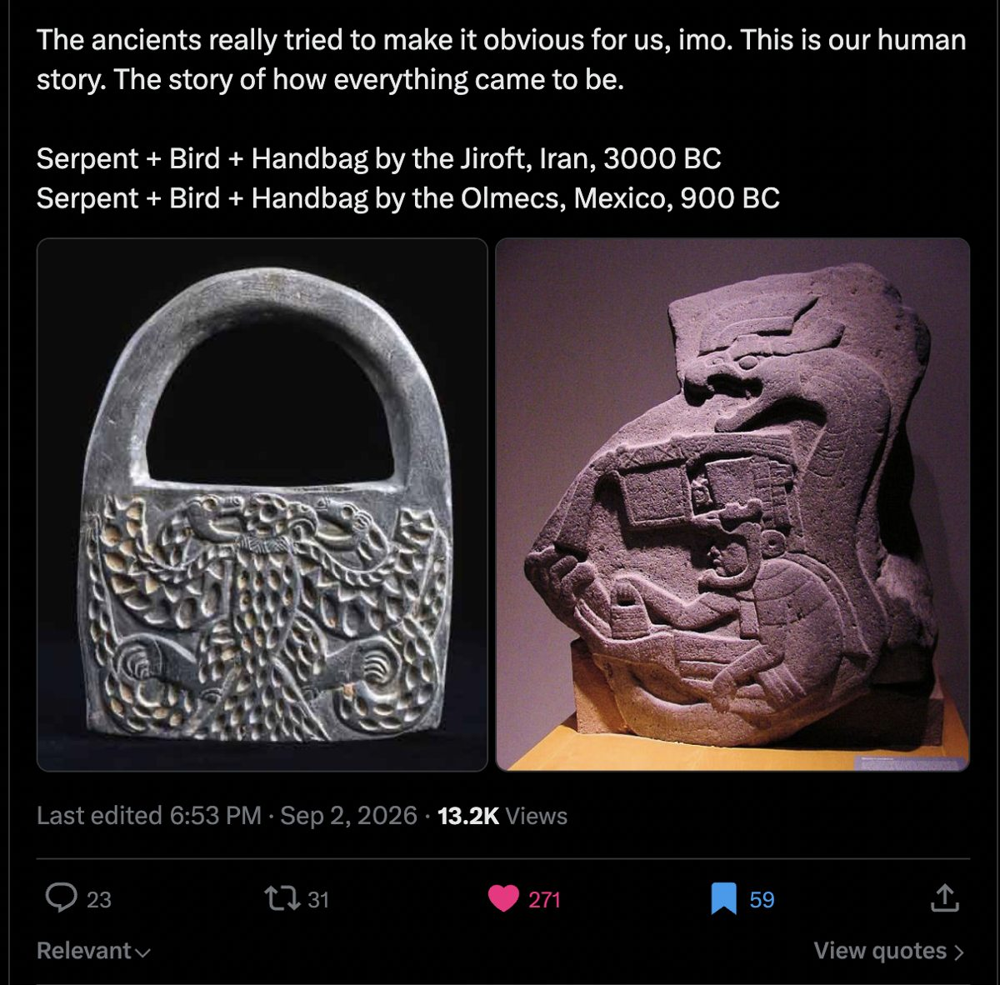
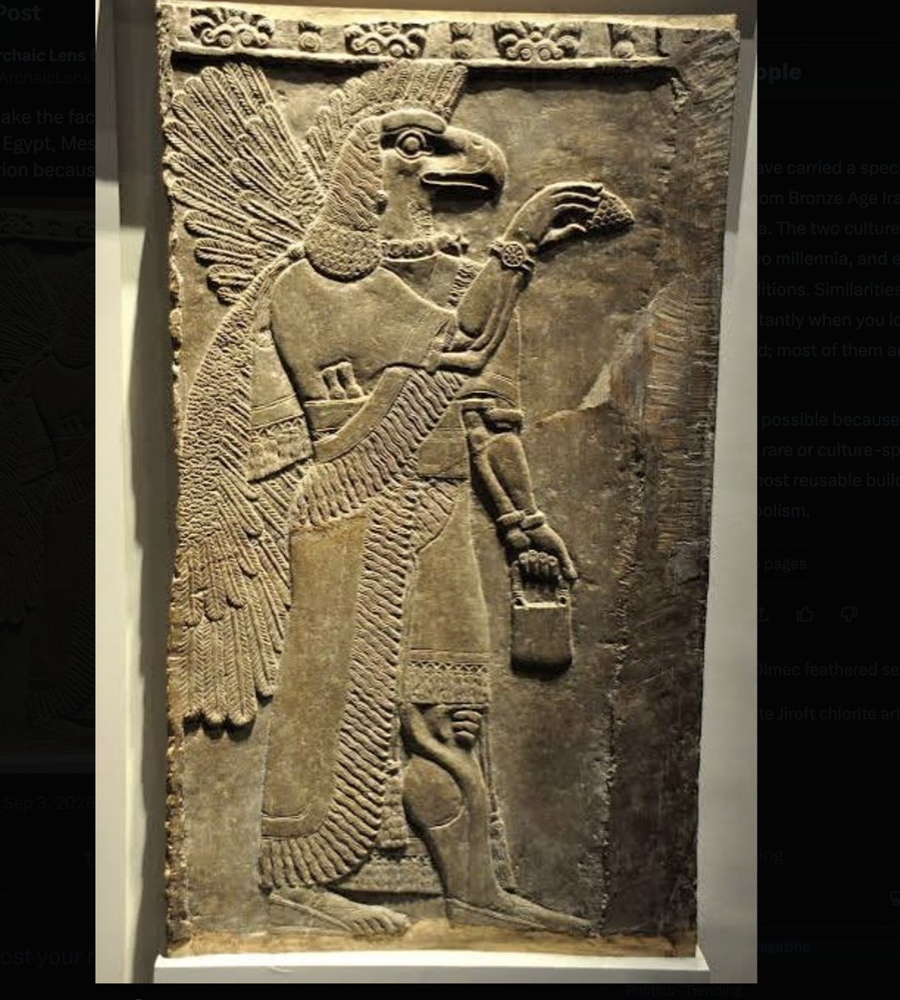
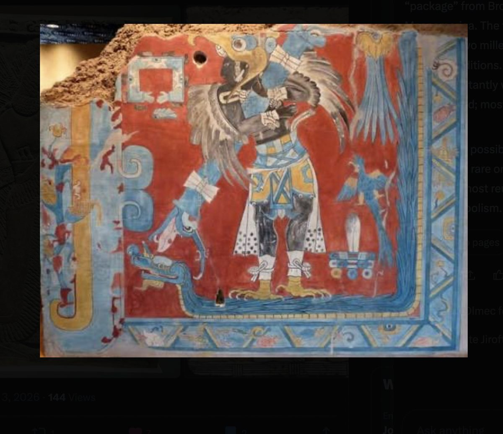

The claim
The posts pair a Jiroft chlorite "handbag" from Iran (about 3000 BCE) with an Olmec relief from Mexico (about 900 BCE); an Assyrian bird-headed apkallu holding a bucket with Thoth and with a bird-costumed figure from Cacaxtla; the Vulture Stone of Göbekli Tepe (about 9500 BCE) with the carved back of a moai on Easter Island (after 1400 CE). The recurring elements: a bird-man, a serpent, a bag, and a sacred centre named "the navel of the world", as at Cusco and Rapa Nui.
The argument is the same one made for the Indus and rongorongo scripts: too many matches to be chance, therefore contact or a shared source. And the reply has to be the same one: "too many" compared to what? Nobody has counted how often these elements co-occur in cultures that had no possible contact, because there was no inventory to count over. For the mythic layer of the claim, there is.




What this catalogue comparison found
Myths of people who are or become birds occur in of the world's documented traditions, cosmic serpents in , and a world axis, tree, pillar or support in . All three together occur in traditions, on every inhabited continent. That is more than the expected if the three were independent, but fewer than the expected once you account for the fact that well-documented traditions have more of everything; against 5,000 random three-motif bundles of the same sizes the real bundle ranks of 5,000, dead average. Of the eight named cultures, only two, the Yucatec Maya and the Cuzco Quechua, carry the full bundle in the catalogue, which random sets of eight cultures match or beat of the time. And the cosmic-serpent motif is less geographically clustered than a random motif of the same frequency: a pattern this analysis cannot attribute uniquely to invention, transmission or survival.
What this does not touch is the iconography: the bags, the bird costumes carved in stone, the hands on the belly. Section 3 says why, and section 10 says what it would take.
What can be tested, and what cannot yet
The Indus and rongorongo test worked because both sides were closed inventories: every sign in each catalogue, and unrelated scripts as controls. Iconographic motifs have no inventory. "Bird-man", "handbag" and "navel" were assembled from all of world art after the fact, each culture contributing its single best-fitting artifact, and the definitions stretched as needed: a chlorite weight, a ritual bucket and a basket become one thing. That is selection from an unbounded set, and no statistic can be computed on it until someone codes a fixed sample of cultures for a fixed list of features without knowing the hypothesis.
The mythic layer is different. Yuri Berezkin and Evgeny Duvakin have spent decades coding the presence of roughly 2,500 narrative motifs across about a thousand traditions worldwide, from some 80,000 summarised texts. Their analytical catalogue is public and licensed for non-commercial research. It contains the motifs this claim is about: people who are or become birds, cosmic serpents that hold up the sky or arch as the rainbow, and the world's axis, tree, pillar and supports. So the testable question becomes: do these three motif classes co-occur across the world's traditions more than three unrelated classes would, and do they cluster in the cultures the posts name?
Two things it cannot say. Göbekli Tepe and Jiroft left no texts, so they are not in any myth catalogue. And "the navel of the world" as a place name, at Cusco or Rapa Nui, is a toponym, not a narrative motif; the catalogue has the world-axis family of motifs instead. Both limits are honest reasons the verdict is narrower than the claim.
The data
The matrix used here is a 2016 snapshot of the catalogue, parsed into a table by Dmitry Nikolaev's mythology-queries project: 926 traditions by 2,138 motifs, present or absent, with a coordinate for every tradition and English names and definitions for every motif. Each tradition is an ethnolinguistic group or an ancient literary corpus, from the Bushmen to Sumer to the Yamana of Tierra del Fuego. The median tradition has 56 coded motifs; the best documented have over 400 and the thinnest a handful. That unevenness matters and is controlled for below.
Three motif classes, defined before looking
Each class is defined by keyword rules applied to the English motif names and definitions, written down before any distribution was examined. A handful of motifs the rules caught on incidental wording were excluded, each with a one-line reason; they are listed here too, struck through, so the choice is auditable. A tradition "has" a class if it has at least one motif in it.
Where the motifs are
The maps are the most useful thing on this page. The question "is it strange that culture X and culture Y both have bird-men?" answers itself once you see how much of the world has bird-men.
Result 1: do the three classes travel together?
If the bundle were a package handed from culture to culture, traditions that have one part should have the others more often than chance predicts. Two nulls are used, and they disagree in an instructive way.
Independence. Multiply the three base rates and the number of traditions: traditions would have all three by luck. The observed is more. On its own that looks like a package.
Documentation-preserving null. But the traditions with the bundle are not a random sample; their median motif count is , against overall. Rich corpora contain everything. The curveball algorithm randomises the whole matrix while keeping every tradition's number of motifs and every motif's number of traditions exactly as they are, then recounts. Across 300 such matrices the bundle appears in ± traditions. The real world has fewer, not more. Given how well each tradition is documented, the three classes co-occur slightly less than they would by chance.
Random bundles. A second check that needs no model: draw three random motif sets of the same sizes as the real classes (27, 9 and 11 motifs) and measure their co-occurrence excess over independence, 5,000 times. The real bundle ranks of 5,000. Half of all random three-motif bundles look at least this "connected".
Result 2: the named cultures
Eight traditions in the catalogue stand for the cultures in the posts. Jiroft and Göbekli Tepe have no texts and are absent; the Olmec are represented by their successors in Mesoamerica, and Cusco by the southern Quechua.
Two of the eight hold the full bundle. Random sets of eight traditions hold it times on average, and random sets matched to these eight on documentation hold it times; the named set matches or exceeds two in of the matched draws. Not surprising. Note also what is missing: none of the four ancient Near Eastern and Egyptian corpora has a bird-people motif at all in this coding, though the bird-headed apkallu and Thoth are iconographic commonplaces. The myths and the pictures are not the same evidence, which is the point of section 3.
Result 3: transmission or convergence?
Berezkin's own headline finding is that motif distributions carry the shape of ancient migrations: motifs cluster along the routes people took. A trait that spread by contact should therefore be spatially clumped; a trait that any culture can invent should be scattered. Moran's I measures clumping, here over each tradition's ten nearest neighbours, and each class is compared with 300 random motif sets of the same frequency.
Bird-people myths cluster a little more than random, at the th percentile; they are dense in Siberia, the Arctic and the Americas, the path Berezkin associates with the peopling of the New World. The cosmic serpent is the opposite: at the rd percentile it is less clustered than almost any random motif of its frequency, present in Australia, Africa, both Americas and Asia in scattered patches. Dispersion is compatible with several histories, including independent invention, diffusion and old inheritance; this statistic does not distinguish them. The world-centre class and the bundle are unremarkable.
What this does and does not show
It tests myths, not pictures. The bags, the bird costumes and the hands on the belly are untouched. Testing them needs a fixed sample of cultures coded for a fixed feature list by people who do not know the hypothesis, from museum collections chosen in advance. The pipeline for that exists in outline; the coding does not.
The catalogue is a 2016 snapshot. Berezkin and Duvakin have added several thousand texts a year since; the current catalogue has about 2,500 motifs and nearly a thousand traditions. Rerunning on a fresh parse is the first thing to do, and the classification rules are written so that it is mechanical.
Ancient corpora are thin. Sumer, Egypt, the Hittites and Easter Island have between fourteen and forty-five coded motifs each. Their absences are weak evidence; their presences are what they are.
The classes are keyword rules. They are written down, every included and excluded motif is listed, and anyone can propose a different rule and rerun. What cannot be done is to adjust the rules after seeing the maps, which is why they are fixed here.
What would change the verdict. A bundle count well above the documentation-preserving null; a rank near 1 among random bundles; the named cultures holding the bundle far more often than matched random sets; and spatial clustering of the bundle beyond random, aligned with a plausible route. None of the four appeared.
Reproduce it
python -m venv .venv && . .venv/bin/activate && pip install numpy cd pipeline python classes.py # keyword rules -> data/classes.json (lists every included and excluded motif) python analysis.py # base rates, curveball null, random bundles, named cultures, Moran's I -> data/results/results.json python build_site.py # docs/data/site.json for this page
Runs in under a minute on a laptop. Seeds are fixed. The only judgement calls are the keyword rules and the thirteen exclusions in classes.py, and the mapping of the posts' cultures to catalogue traditions in analysis.py.
| Source | Used for |
|---|---|
| Berezkin & Duvakin, Analytical catalogue (CC BY-NC-SA 4.0) | Motifs, definitions, distributions |
| mythology-queries (D. Nikolaev) | 2016 parse of the catalogue into a matrix with coordinates |
| Natural Earth | Coastlines (public domain) |
| Strona et al. 2014, Nature Communications 5:4114 | Curveball randomisation |